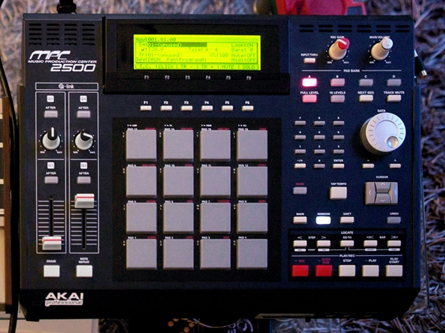
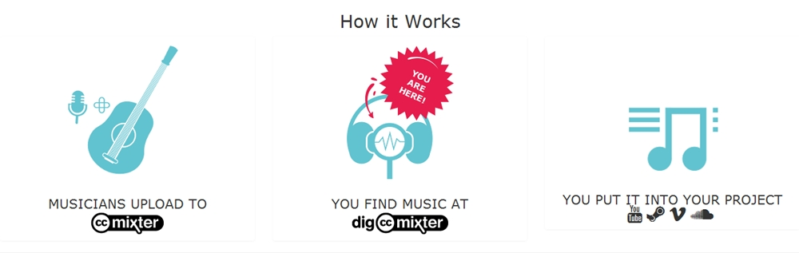
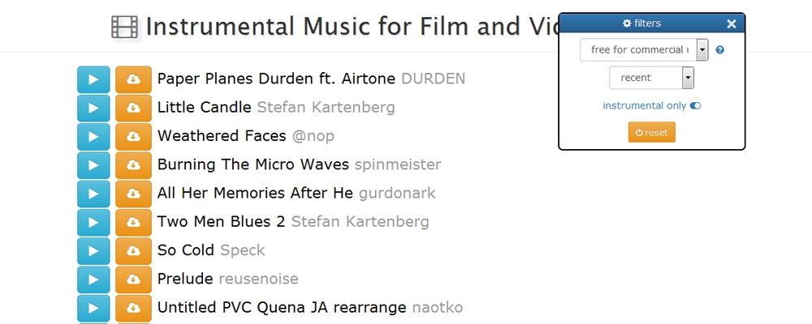
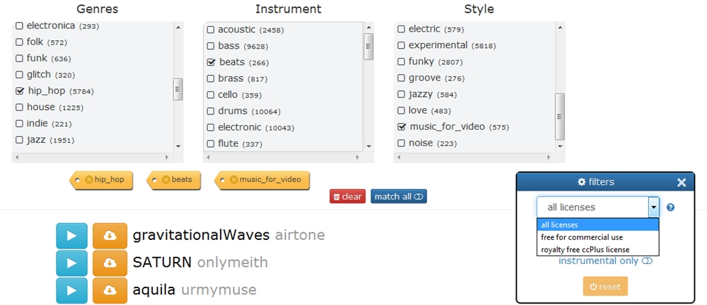
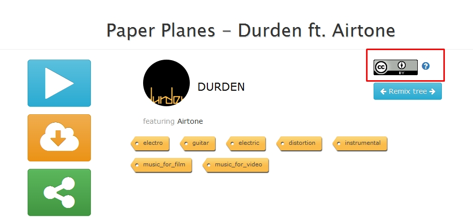

Hip Hop, Hak Cipta, dan Musik Sumber Terbuka
Gaya bermain musik terus berkembang hingga hari ini, seiring dengan berkembangnya kebudayaan dan teknologi. Industri musik, dan tentu saja media amat berperan dalam pemberian label atau istilah untuk mengidentifikasi, dan mendeskripsikan tiap gaya musik. Label-label tersebut, yang lebih sering disebut sebagai genre, juga kerap diterapkan oleh pendengar ketika mereka berusaha untuk memetakan atau memilah koleksi rekaman musik yang mereka miliki. Salah satu genre musik yang hingga kini amat erat kaitannya dengan berkembangnya teknologi dalam kebudayaan manusia ialah musik elektronik.

Perkembangan teknologi banyak membantu upaya penggunaan kembali bebunyian (sampling), yang dilakukan oleh komposer-komposer musik elektronik dari masa ke masa. Dalam metode ini komposer memanfaatkan kembali bebunyian yang sudah terekam maupun yang direkamnya sendiri dalam aktivitas pembuatan komposisi. Model penciptaan musik ini, sejak dahulu, amat terbantu dengan keberadaan alat perekam dan manipulasi rekaman seperti phonograph, turntable, maupun yang paling modern seperti sampler, yang berupa perangkat keras maupun perangkat lunak. Mulai dari awal eksploitasinya di ranah musik eksperimental (akademis) hingga di ranah musik populer, sampling menjadi salah satu metode yang banyak diterapkan dalam penciptaan karya musik elektronik hingga kini.

{kind=link}
Musik Hip Hop merupakan musik populer pertama (sebagai subgenre musik elektronik.red) dengan basis metode sampling, yang dilahirkan oleh kebiasaan memanipulasi piringan hitam para Disc Jockey (DJ) melalui dua turntable dan audio mixer pada era 1970-an.[1] Bahkan, dapat dianggap bahwa metode ini merupakan salah satu unsur penting dalam proses kreatif produksi musik para beatmaker. Sebagai contoh, seorang DJ dalam kebutuhan live set, ia akan menggunakan seluruh maupun sebagian dari tiap rekaman-rekaman musik yang ia kurasi untuk diputar, dengan urutan tertentu, guna membangun suasana di set tersebut. Di kebutuhan lain, misalnya kebutuhan untuk menciptakan beat musik hip hop, beatmaker biasanya memproduksi sebuah lagu dengan menggunakan bagian dari rekaman musik yang sesuai dengan kebutuhan konstruksi musik yang dibuatnya, untuk kemudian disusun, dan dicampur dengan rekaman musik lainnya, atau rekaman musik buatannya sendiri. Hip hop mulai dikenal secara utuh di Indonesia pada akhir tahun 80-an. Dalam perkembangannya, para beatmaker di Indonesia juga banyak yang memanfaatkan metode sampling ketika mereka memproduksi musik. Anda dapat mendengarkan lagu produksi oleh Dangerdope yang gemar memanipulasi rekaman musik-musik lama Indonesia ini sebagai contoh.
Selain rekaman musik, rekaman percakapan atau pidato seseorang juga banyak digunakan di ranah musik Hip Hop. Sebagai contoh, Homicide menggunakan rekaman orasi almarhum Munir pada lagunya yang berjudul “Rima Ababil”. Sama halnya dengan Public Enemy yang menggunakan rekaman pidato Malcolm X yang berbunyi, “Too black, too strong! Too black, too strong!” pada lagunya yang berjudul “Bring The Noise”.
Kita bisa melihat video bedah sample dari album Kendrick Lamar yang berjudul “To Pimp A Butterfly” oleh Genius berikut ini sebagai ilustrasi beragam jenis hal yang digunakan sebagai sample dalam album tersebut.
Masalah Hukum Dalam Aktivitas Sampling di Ranah Musik Hip-Hop
30 tahun lalu Afrika Bambaata menjadi salah satu pionir dalam penggunaan metode sampling dengan menggunakan potongan lagu “Trans-Europe Express” milik Kraftwerk ke dalam lagunya yang berjudul “Planet Rock”. Dengan etos jalanan yang dipegang mereka waktu itu, tidak ada yang menyangka bahwa penggunaan potongan lagu tersebut mengandung potensi sengketa hak cipta. Dalam produksi lagu tersebut, mereka dengan tanpa izin menggunakan potongan lagu tersebut, tanpa menyebut nama Kraftwerk pada rekaman yang telah dirilis, dan sama sekali tidak membayarkan royalti kepada pihak Kraftwerk.[2] Setelah Tommy Boy Records merilis rekaman musik tersebut, dan berhasil menjual setidaknya 750.000 kopi piringan hitam ukuran 12 inci “Planet Rock”, Kraftwerk melayangkan gugatan yang menuntut mereka untuk membayar kerugian sebesar 3 kali lipat dari total penjualan piringan hitam tersebut.[3] 30 tahun kemudian, Kraftwerk kembali mengajukan gugatan penggunaan potongan lagu “Metal on Metal” yang dilakukan tanpa izin oleh Moses Pelham di dalam lagu Sabrina Setlur yang berjudul “Nur Mir”. Setelah hampir dua dekade menjalani proses persidangan, dengan mengajukan satu kali upaya banding, yang kalah kali ini adalah pihak Kraftwerk. Pengadilan tertinggi Jerman menyatakan bahwa metode sampling sah-sah saja dilakukan jika karya turunan tersebut tidak merugikan pencipta atau pemegang hak cipta secara finasial. Jika dampak yang ditimbulkan oleh penggunaan potongan lagu tersebut masih sepele, maka “kebebasan artistik” dapat mengesampingkan pemegang hak cipta.
Meskipun putusan pengadilan ini tidak berlaku sebagai preseden untuk perkara-perkara serupa di masa depan, putusan ini dapat menjadi suatu percontohan ketika seorang penegak hukum mau mengakui keberadaan dan menerapkan konsep penggunaan wajar. Penggunaan wajar adalah konsep di mana seorang pengguna ciptaan diperbolehkan menggunakan suatu ciptaan asal tanpa izin dengan tetap menyebutkan sumber serta nama pencipta materi yang digunakan, dan tidak merugikan kepentingan wajar Pencipta atau Pemegang Hak Cipta. Ketentuan ini juga diterapkan oleh rezim hak cipta di Indonesia, yaitu pada Pasal 43 Undang-Undang No. 28 Tahun 2014 Tentang Hak Cipta. Meskipun terkesan memberikan keringanan, konsep penggunaan wajar tidak memberikan penjelasan tentang batas wajar aktivitas penggunaan ciptaan orang lain. Ketidakpastian hukum ini merupakan celah terjadinya sengekta hak cipta antara pihak pengguna ciptaan yang merasa penggunaannya merupakan penggunaan wajar (tidak dianggap sebagai pelanggaran hak cipta.red), dan pihak pencipta dengan anggapan sebaliknya. Begitupula dengan doktrin De Minimis. Argumen penggunaan doktrin tersebut tidak akan selamanya aman, sebelum doktrin tersebut dapat menjadi standar aktivitas sampling.[4]
Celah sengketa ini merupakan sesuatu yang membahayakan. Karena, dapat kita lihat dari dua contoh yang melibatkan Kraftwerk tersebut, bagian dari lagu mereka yang digunakan tidak lebih dari 10 detik dari durasi keseleruhan lagu tersebut. Selama Pencipta materi asli tidak menganggap penggunaan dengan volume yang sedikit itu sebagai penggunaan wajar, maka potensi sengketa hak cipta, dengan segala risiko yang dapat menimpa pencipta ciptaan turunan, akan tetap ada.
Perangkat Legal Untuk Menghindari Sengketa Hak Cipta Dalam Aktivitas Sampling
Kita sudah melihat bagaimana perkembangan teknologi telah memudahkan para komposer musik elektronik, khususnya Hip Hop, dalam menciptakan karya-karyanya. Selain teknologi berupa instrumen pembantu aktivitas penggunaan kembali konten musik, teknologi berupa koneksi internet memberikan akses luas komposer untuk secara kreatif menggunakan kembali bebunyian-bebunyian yang tersebar di dalam jaringan internet. Kita juga sudah melihat, bagaimana penggunaan potongan sekian detik dari suatu lagu, dapat menggiring orang untuk bersengketa di pengadilan selama 20 tahun.
Dengan melihat masalah-masalah hukum yang tidak dapat mengakomodasi kebiasaan kreatif jenis ini, yang kini dapat diakses, dan menjadi kegiatan sehari-hari seseorang, maka muncul inisiatif lisensi terbuka, yaitu Creative Commons (CC). CC menyediakan 6 pilihan lisensi terbuka untuk mengakomodasi tiap kebutuhan dalam aktivitas berbagi konten. Tujuannya adalah untuk memperbesar celah aktivitas berbagi, dan mengakomodasi kebiasaan kreatif yang kian berkembang seiring dengan perkembangan teknologi yang kian memudahkan metode penciptaan musik seperti sampling (penggunaan kembali suatu konten.red). Memang, dalam perkembangannya, hak cipta konvensional telah menyediakan fasilitas seperti Compulsory License supaya setiap tindakan sampling mendapatkan kepastian hukum tanpa ada izin langsung dari pencipta materi. Namun, ketentuan tersebut masih terbatas kepada pencipta ciptaan turunan yang mau, dan mampu membayar sejumlah biaya Compulsory License tersebut. Siapakah pencipta ciptaan turunan yang mau, dan mampu membayar? Tentu saja kebanyakan dari mereka juga orang-orang yang sudah memiliki pemasukan yang mumpuni di ranah musik. Ketentuan ini tidak mengakomodasi kebutuhan para pencipta amatir yang melakukan hal tersebut sebagai hobi, bukan profesi. Ciptaan-ciptaan berlisensi CC memberikan kesempatan kepada pengguna ciptaan untuk menggandakan, menyebarluaskan, dan membuat ciptaan turunan dari ciptaan tersebut, kecuali yang menerapkan ketentuan NonDerrivatives atau TanpaTurunan (ND). Lalu, semua ciptaan yang tidak menerapkan ketentuan NonCommercial (NC), dapat kembali digunakan dalam proyek-proyek komersial. Seluruh ketentuan lisensi CC mewajibkan pengguna ciptaan untuk memberikan atribusi, menyebutkan nama dan sumber ciptaan asli, pada pencipta ciptaan yang digunakan. Sehingga ciptaan-ciptaan ini dapat memberikan kesempatan yang lebih luas kepada siapapun yang ingin menciptakan suatu ciptaan turunan.
Memperkenalkan CC Mixter

CC Mixter merupakan situs yang ditujukan kepada pencipta konten musik yang ingin melisensikan ciptaannya dengan lisensi CC. Perbedaannya dengan situs-situs lain yang menyediakan platform lisensi CC seperti FMA, dan Internet Label, situs ini juga menyediakan fungsi jejaring sosial kepada para penggunnanya. Para pengguna dapat mengunggah ciptaan musik mereka secara penuh, maupun hanya bagian-bagian tertentu seperti vokal, atau drum beats, yang kemudian dapat direspon oleh pengguna lainnya untuk kemudian diciptakan sebagai ciptaan turunan atau karya remix. Dengan adanya model jejaring sosial ini, pengguna dapat membangun pohon remix-nya bersama pengguna lain, dan tetap dapat menemukan cabang-cabang instrumen yang digunakan pada karya remix tersebut. Yang perlu diperhatikan, situs ini hanya menyediakan ciptaan yang menerapkan ketentuan lisensi CC seperti CC BY, dan CC BY-NC.
Sistem tatap muka di situs ini memberikan petunjuk kepada pengguna agar dapat menemukan berkas audio yang sesuai dengan kebutuhannya. Tiga petunjuk yang disediakan oleh CC Mixter pada situsnya adalah Instrumental Music for Film and Video, Free Music for Commercial Projects, dan Music for Video Games.

Kemudian, Anda masih dapat menggunakan fitur penyaring yang disediakan untuk dapat mengakses ciptaan berdasarkan lisensi yang sesuai dengan kebutuhan Anda.

Pada menu lain, Anda dapat mencari musik atau bebunyian yang Anda butuhkan dengan memanfaatkan fitur penyaring genre, dan penyaring lisensi secara bersamaan seperti yang ada pada gambar di atas.

Dengan menggunakan ciptaan-ciptaan berlisensi terbuka, Anda sama sekali tak perlu khawatir dengan potensi sengketa hak cipta, selama Anda mengikuti ketentuan yang tertera pada lisensi tersebut. Lisensi terbuka berusaha menjadi perpanjangan tangan dari ketentuan seperti penggunaan wajar maupun De Minimis, dan berupaya memberikan kepastian hukum kepada pengguna ciptaan. Selain itu setiap pencipta yang menerapkan lisensi CC pada ciptaannya tidak sama artinya dengan melepaskan hak ciptanya. Mereka hanya melepaskan beberapa bagian dari hak ciptanya demi efisiensi dalam konteksi aktivitas berbagi serta penggunaan kembali konten di masa sekarang.
Daftar referensi: [1]. Lott, Ryan. “History of Sampling”. Joyful Noise Recordings. [2]. Hal. 115, Creative License: The Law And The Culture of Digital Sampling, Kembrew McLeod, Peter Dicola, 2011, Duke University Press [3]. I Was A Robot oleh Wolfgang Flur [4]. Heins, Marjorie (2004-09-21). “Trashing the Copyright Balance”. The Free Expression Policy Project.
Tags:
Oleh: Hilman Fathoni
3 Mar 2017Kategori:
Berita Terbaru
- Lokakarya Hak Cipta dan Lisensi Creative Commons di Pekanbaru
- Pengumuman Resmi: Hasil Akhir Training of Trainers Creative Commons Indonesia
- Literatur tentang Model Bisnis Terbuka "Made With CC"
- Data dan Artikel Ilmiah Terbuka dari PLOS!
- Konten Format Model 3 Dimensi Berilsensi CC di Platform Sketchfab